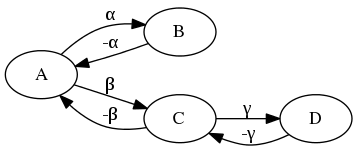
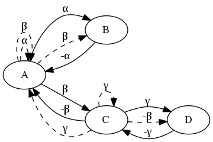

Non-deterministic navigation
See non-deterministic navigation in action:
AIMA 4.12 modifies the partially observable navigation world, adding some non-determinism: when the robot moves to point \(P\) to \(Q\), \(30\%\) of the time it will end up at \(Q'\): where \(Q'\) is \(P\) (it did not move at all) or some random \(R \in N(P)\) (a random neighbor of \(P\)).
An upshot of this non-determinism is that our transition model is no longer straightforward; for instance, the following deterministic graph (figure 1):

has this transition model (table 1):
| State | Action | Result | ||
|---|---|---|---|---|
| A | + | α | \(\to\) | B |
| B | + | -α | \(\to\) | A |
| A | + | β | \(\to\) | C |
| C | + | -β | \(\to\) | A |
| C | + | γ | \(\to\) | D |
| D | + | -γ | \(\to\) | C |
Whereas, with a non-deterministic graph, we might see something like this (with less probable transitions dashed, figure 2):

and a probabilistic transition model (table 2):
| State | Action | Result | P | ||
|---|---|---|---|---|---|
| A | + | α | \(\to\) | B | \(0.63\) |
| A | + | α | \(\to\) | A | \(0.37\) |
| A | + | β | \(\to\) | B | \(0.10\) |
| A | + | β | \(\to\) | A | \(0.05\) |
| A | + | β | \(\to\) | C | \(0.85\) |
| B | + | -α | \(\to\) | A | \(1.0\) |
| C | + | -β | \(\to\) | A | \(0.71\) |
| C | + | -β | \(\to\) | D | \(0.29\) |
| C | + | γ | \(\to\) | A | \(0.20\) |
| C | + | γ | \(\to\) | C | \(0.13\) |
| C | + | γ | \(\to\) | D | \(0.67\) |
| D | + | -γ | \(\to\) | C | \(1.0\) |
If we perform \(\alpha\) at \(A\) and expect to be at \(B\) but wind up instead at \(C\), we can (given sufficient data) determine that a statistical anomaly took place and try to correct it.
Let’s say, for the sake of argument, that we performed \(\alpha\) at \(A\) in figure 2 and expected to wind up at \(B\) but instead wound up at \(C\); a reasonable strategy to get back to \(B\) would be to try to get back to \(A\) and thence to \(B\).
If we don’t have enough information to get back to \(A\), however (i.e. we haven’t yet discovered the path \(-\beta\) from \(C\) to \(A\)), we’re forced to try edges randomly from \(C\) and hope we get back to \(A\).
If we try a random edge from \(C\), however, and don’t wind up back at \(A\), we have to try to get back to \(C\) before we can try to get back to \(A\) and thence to \(B\), &c.
In order to cope with these scenarios, we’ve introduced a notion of a contingency stack; if we have anything on the contingency stack, we’ll attempt to deal with it before resuming our normal goal-finding operations.
After \(A + \alpha \to C\) above, our contingency stack looks like this:
- Get back to \(A\).
- Get back to \(B\).
After we realize that we don’t know how to get back to \(A\) from \(C\), we’re going to try a random action and modify the contingency stack accordingly:
- Are we back at \(A\)?
- If so, great.
- If not, get back to \(C\).
- Get back to \(A\).
- Get back to \(B\).
This is an example of why doing AI in Scheme is such a pleasure; our contingency stack can be a stack of lambdas that maps the current state to some desired state.
Here’s what the contingency calculus looks like in Scheme: we’ve wound up somewhere statistically anomolous (e.g. \(C\)) and should try to get back to where we expected to be (\(B\)); if we moved somewhere along the way, though, we first need to get back to the previous state (\(A\)):
;; Is this state (C) statistically anomolous? (unless (not-unexpected-state? expected-state state) ;; Yes, it is. Let's push the ;; expected-state (B) onto the contingency ;; stack. (stack-push! contingency-plans (lambda (state) expected-state)) ;; Was the last move a noöp, or did we end ;; up moving somewhere? (unless (equal? previous-state state) ;; We moved; push the previous state ;; (A) onto the contingency stack, ;; too. (stack-push! contingency-plans (lambda (state) previous-state))))
This is the case where we don’t know how to get back to the previous state (e.g. \(A\)) from the anomolous state (\(C\)) and need to try random directions: if we wind up back at the previous state (\(A\)), great; if not, we need to get back to the anomolous state first (\(C\)) and try again:
;; Do we know how to return to the ;; previous state (A)? (if return ;; Yes; return! (move state return) (begin ;; Nope: move randomly; and push a ;; contingency onto the stack such ;; that, if we don't end up at the ;; previous state (A), we try to ;; get back to the anomolous one ;; first (C). (stack-push! contingency-plans (lambda (state) (if (equal? state expected-state) expected-state state))) (move-randomly state)))
Our contingency stack is a stack of lambdas matching current states to desired states:
$$\lambda S \to S'$$
Some of the desired states are not actually contingent on the current state (e.g. “Get back to \(A\).”); it ends up looking like this:
- \(\lambda S \to S \text{ if } S = A, \text{ otherwise } C\)
- \(\lambda S \to A\)
- \(\lambda S \to B\)
And here’s how it looks in action: our contingency stack is two deep (figure 3); we successfully return to the previous state (figure 4); and thence to the desired state (figure 5).
{kind=link}
Figure 3: The stack is two-deep
{kind=link}
Figure 4: Return to the previous state
{kind=link}
Figure 5: Finally achieve the expected state